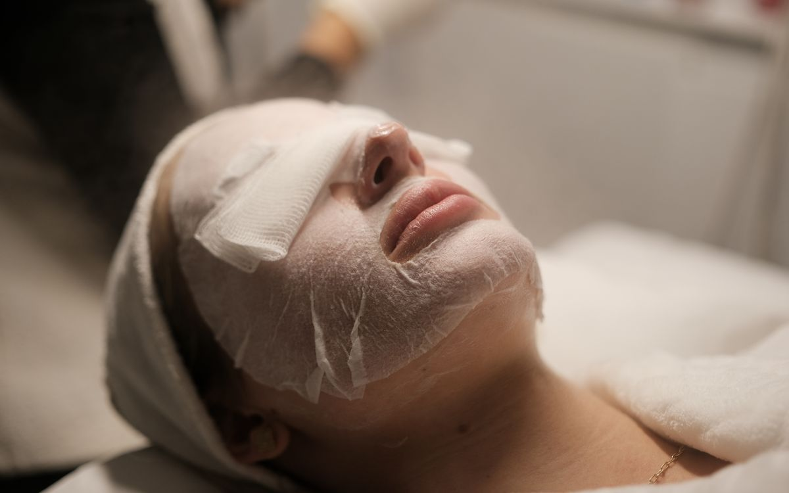
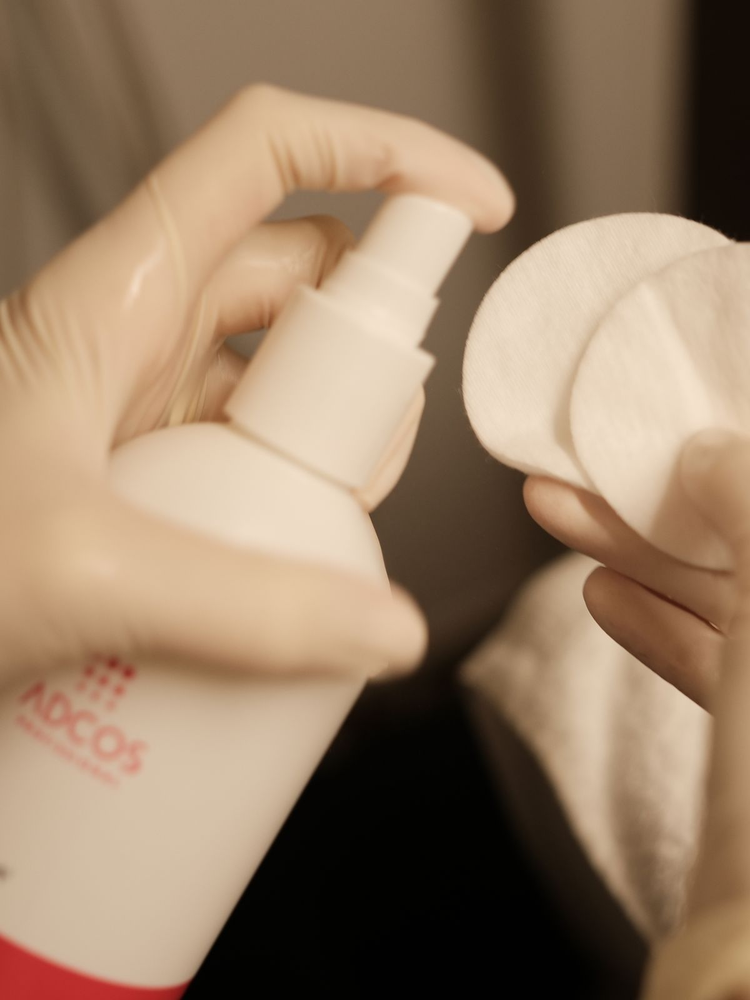
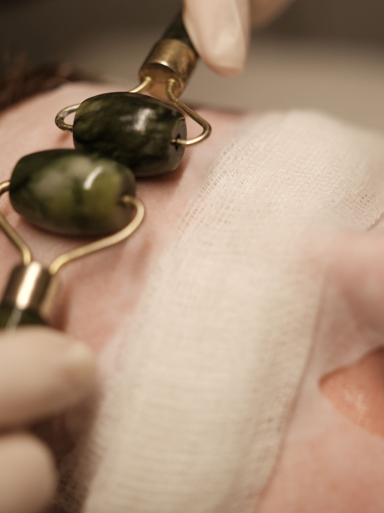
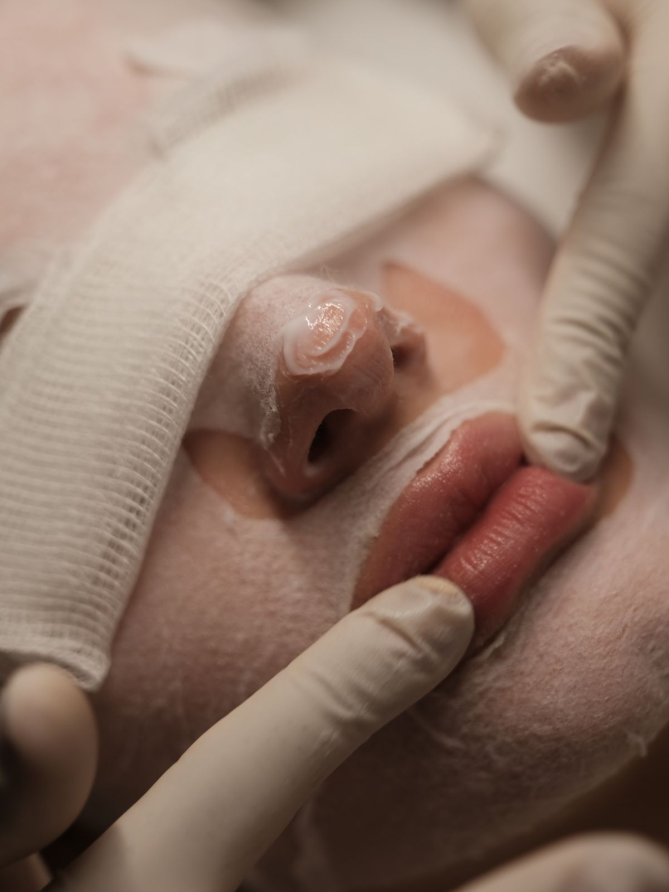
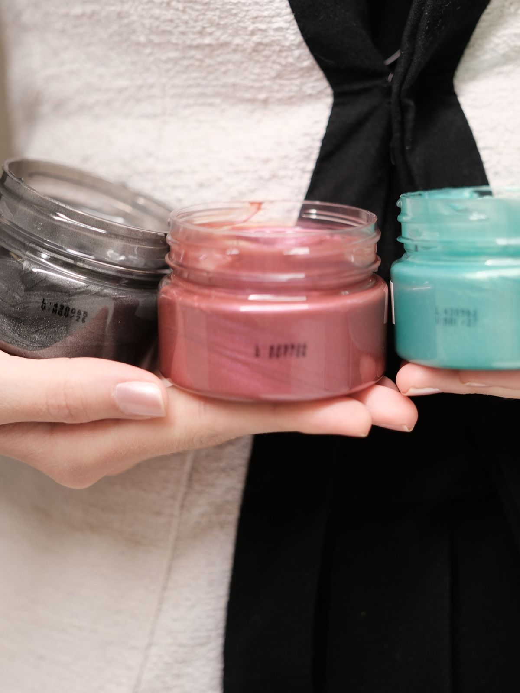

Guia Camelie · Limpeza de pele
Limpeza de pele
O cuidado com a pele começa pelo básico. Higienização profunda e renovação, feitas com técnica e tempo.
- Duração
- cerca de1h30
- Etapas
- protocolo de4 passos
- Frequência
- a cada3 a 6 meses
- Recuperação
- por volta de3 a 5 dias
O que é
A limpeza de pele da Camelie é uma higienização profunda da pele facial, com foco em remoção de cravos (comedões), controle de oleosidade e melhora de textura. É a porta de entrada de muitas pacientes na clínica. O protocolo é individualizado conforme a avaliação da sua pele e realizado pela equipe técnica, sob responsabilidade das dermatologistas.

Como funciona
Um protocolo manual completo, de cerca de 1h30, conduzido com técnica e sem pressa.

Higienização
Remoção da maquiagem e limpeza inicial, que retiram resíduos e preparam a pele para as etapas seguintes.

Esfoliação e emolientes
Renovam a superfície e amaciam a pele, tornando a extração mais segura e confortável.

Extração manual
Remoção cuidadosa dos cravos. O que não sai com segurança fica para a próxima, sem forçar a pele.

Finalização
Máscara calmante ou vapor de ozônio, conforme o seu tipo de pele, e fotoproteção ao final.
O que esperar
A pele costuma ficar mais limpa e com textura melhor já após a sessão. A extração pode ter um leve desconforto em alguns pontos, reduzido pelo preparo que amacia a pele antes. Pequenas marcas e vermelhidão podem aparecer temporariamente nas áreas de extração e costumam desaparecer em 3 a 5 dias.
O que não sai com segurança hoje fica para a próxima. A pele agradece a paciência.
Cuidados
Antes da sessão
- Informe uso de ácidos, retinoides ou isotretinoína.
- Evite sol intenso nos dias anteriores.
- Chegue com a pele limpa, sem maquiagem quando possível.
Depois da sessão
- Protetor solar FPS 50 ou maior, toque seco, ao longo do dia.
- Evite sol direto, ácidos e peelings por 7 dias.
- Hidratante calmante e leve; não manipular a área.
Depois da sessão, você recebe as orientações completas de cuidado.
Bom saber
Pequenas marcas temporárias na pele fazem parte da recuperação; evite agendar na véspera de eventos importantes, o ideal é uma semana de distância.
Pode ser combinada com o Aquapure na mesma sessão, somando a extração manual à infusão de ativos; a limpeza vem primeiro.
Algumas condições pedem avaliação prévia, como acne inflamatória em atividade, uso recente de isotretinoína, ácidos ou peelings, infecções ou feridas na área e gestação.
O começo é sempre uma avaliação. Nela, entendemos a sua pele e o que ela precisa, e em que ordem.
Para agendar ou tirar dúvidas, é só continuar a conversa por aqui no WhatsApp.
Continuar no WhatsApp